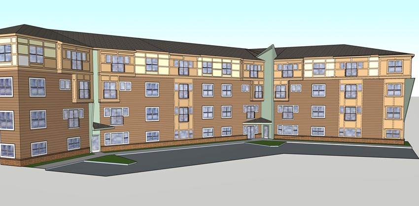
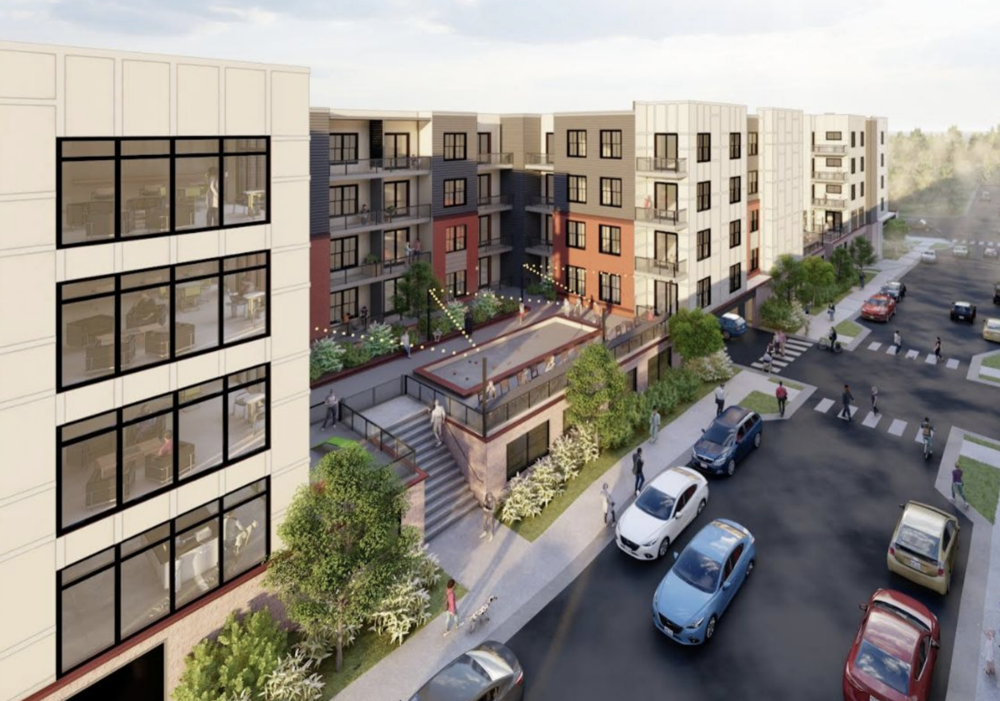

Asheville’s Housing Trust Fund: An Appreciation
August 3, 2025
This member commentary post does not necessarily reflect the views of Asheville For All or its members.

We don’t talk a lot about Asheville’s Housing Trust Fund, perhaps the city’s biggest subsidized housing program. (By contrast, we do talk a lot about the city’s defunct Land Use Incentive Grant program.) Asheville For All did enthusiastically support the recent bond referenda, in large part because these kinds of bonds are how the Housing Trust Fund gets money.
In any case, in light of recent events it’s occurred to me that the Housing Trust Fund, or HTF, may be worth discussing.
What is the Housing Trust Fund?
Asheville’s Housing Trust Fund is pretty simple. It’s money that the city has set aside, and is then loaned out to developers seeking to build below-market-rate homes. The money is loaned out at a lower rate than the developer can get from a traditional “funding stack.” That means that projects that wouldn’t otherwise “pencil” become possible.
The city has a set of guidelines to determine what kinds of projects are rewarded with HTF money. In addition to its primary goal of supporting the proposals with “the greatest number of affordable units”—remember that “affordable” as it’s used in housing circles is actually a bit of jargon that means below-market-rate—HTF guidelines also favor things like “development that avoids displacement of housing units or local small businesses,” and “projects located along transit and multi-modal corridors or near job centers.”
The Housing Trust Fund is a redistributionary program in the sense that it uses bond money, paid by property owners, to make the construction of new income-restricted homes possible. (Remember that cities can get bonds at much lower rates than developers can get loans.) But in another sense, its funding is also self-sufficient. The money eventually comes back to the city as loans are repaid. As that cash goes back into the Housing Trust Fund’s coffers, that money can then be used again for more loans. Presuming that the city will also continue to raise money for the Housing Trust Fund in subsequent bonds, just as it did in the bond referendum last fall, the Housing Trust Fund will ideally grow in size, snowballing in a sense.1
At least 1,300 homes have been built with subsidies, at least in part, from Asheville’s Housing Trust Fund, and there’s likely a few hundred more in the pipeline.
Revolving Loan Funds Are Broadly Popular Across the Political Spectrum
It was three recent articles that I ran across, somewhat randomly, that got me thinking about the Housing Trust Fund anew.
First, was an article in the venerable left-wing magazine Dissent, by the socialist economist J.W. Mason. I think the article is generally thoughtful, though I’ll share some issues that I had with it in a footnote.2
Mason is writing about the recent success of Zohran Mamdani, the New York state assemblyman who is now the Democratic nominee for New York City mayor. Mason, in laying out what a practical approach to Mamdani’s housing affordability goals might look like, makes a case that because construction is so costly, New York needs to not only upzone wealthy, high-amenity neighborhoods and abolish parking mandates as the democratic socialist Mamdani has called for, but also finance the development of new homes—even market-rate homes—with low-interest funds.
This might strike some readers as unusual—a socialist arguing for public loan assistance to private developers building market-rate apartments! I think it’s a good sign that my fellow comrades are thinking smarter, and in less Utopian terms, about the housing shortage.
The second recent article I encountered makes a similar case for programs just like Asheville’s Housing Trust Fund. The San Francisco Standard raises a concern that the coming interest rate, tariff, and migrant labor crises are going to add up to massive increases in construction costs. It notes places like Rhode Island and Montgomery County, Maryland, that have recently implemented revolving, low-interest loan funds of their own. Incidentally, Asheville’s recent Affordable Housing Plan suggests that Asheville was ahead of the curve with its Housing Trust Fund, which is now twenty five years old!
But this article also suggests that Asheville might go bigger and more ambitious with HTF. It quotes California assembly member Alex Lee who sees a role to play for revolving loan funds in not just subsidizing new low-income homes, but in fostering the creation of “social housing,” which itself is intended to be self-sufficient. One of the main ideas behind social housing is that with partial or whole equity from a city (or county or state), a mixed-income housing project can “cross-subsidize” its below-market-rate homes with the money from its market-rate homes that would otherwise go to repay loans, or go to the profits for property owners.
The aforementioned Montgomery County is using its revolving funds to get social housing built already, even as it has long been considered an impossibility in the United States. Social housing is an umbrella term that can mean a lot of things, and people don’t always agree on all of the details. People sometimes argue about the concept’s political slant too, as social housing is often held up by socialists as an end goal of housing policy. (Lee identifies as one.) But there really does appear to be great appreciation for what Montgomery County is doing from across the political spectrum.3
Will Asheville’s Housing Trust Fund Go Away?
I happened upon a third article the very same day. The Citizen-Times reported that half of the twenty million dollars raised in last fall’s housing bond will not go to the Housing Trust Fund, but rather to a new third-party entity called the Western North Carolina Affordable Housing Loan Fund, which is run by Self-Help Credit Union. The article notes that Dogwood Health Trust has seeded the fund with forty million dollars.
As the name suggests, this fund will work a lot like the Housing Trust Fund. One city staffer is quoted as calling the WNC Affordable Housing Loan Fund the “next step in the evolution” of the HTF.
The idea seems to be that Self-Help will be better equipped to raise matching funds from various kinds of institutions and package them together. Developers of subsidized and/or mixed-income projects are rarely able to rely on just one source of subsidy. In fact, as I understand it, funding sources are unlikely to grant or loan money unless other sources of funds have been identified by the developer.
And to be clear, the article notes that the ten million dollars going to the WNC Affordable Housing Loan Fund is itself a zero-interest loan. That means the city will get that money back eventually. Will the repaid money go then go into the Housing Trust Fund?
I find this a little confusing, to be honest! Elsewhere in the article it suggests that the HTF will continue to be funded.
An Appreciation for the HTF
Consider what happened a couple of months ago regarding 319 Biltmore Ave. That project, a mixed-income apartment complex on city-owned land close to downtown, has been in the works for years. Initially, the idea was to sell the land to a developer for one dollar, as a kind of subsidy to get the apartments realized.
This year, the developers came back to the city to say that the math was no longer working for them, and they were having trouble completing their funding stack. The city came up with a novel approach, and the deal for this was sealed by a unanimous City Council vote in their late June meeting.
In short, the city is pitching in an additional three million dollar loan, at two percent interest, from the Housing Trust Fund. The city is also pitching in a tax abatement worth two million dollars.
It gets more interesting. As part of this deal, the land is no longer leaving the city’s hands. Rather, it will be leased for a term of 99 years. (The new deal also includes a large increase in the number of below-market-rate homes to be included.)
This is somewhat exciting. I wrote a while back about the idea, offered by esteemed housing policy analyst Shane Phillips, that cities shouldn’t sell their land to developers but rather lease it instead. Maybe this is a precedent that will continue? In any case, I don’t know if it would have happened—or at least it would have been harder to pull off—if the Housing Trust Fund wasn’t right there with some ready cash to lend.

Should the Housing Trust Fund go away, I’m sure the WNC Affordable Housing Loan Fund will do some good stuff. But I do wonder if we lose the opportunity to think about what makes government power unique and significant here. We could not only see more potential deals such as 319 Biltmore Ave., but if the HTF were really to intentionally snowball, we might be able to see something like what Montgomery County has been doing, at least in some form, some day, as well.
-
Note that because the loans issued might be below the rate of inflation, there’s some nuance here, but you get the idea. ↩
-
I have a gripe with one claim that Mason makes that’s contrary to the most up-to-date research. He suggests that new infill home construction will raise immediately surrounding rents. My hunch is that he may have been reacting to some very real effects that New York City did experience due a strange confluence of zoning and real estate policies that were enacted in the Bloomberg era, where high-wealth areas were downzoned at the same time that pockets of the city were opened up to more density. He’s still wrong on the specific point. A less egregious claim is one that suggests land use reform will stabilize rents but it can’t reduce them. There is evidence from other in-demand cities that suggests this is not the case.) ↩
-
Montgomery County’s social housing projects have received quite a bit of press in recent years. Here are a few good articles. Here’s a nuanced take from a generally more conservative outlet. ↩
This member commentary post does not necessarily reflect the views of Asheville For All or its members.